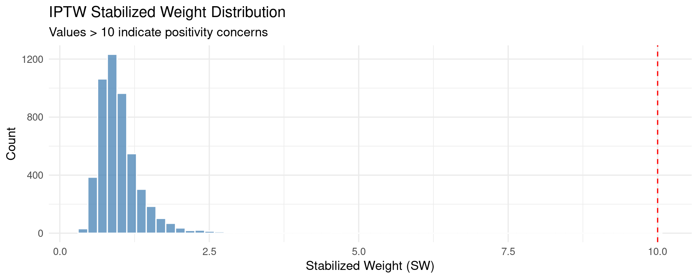
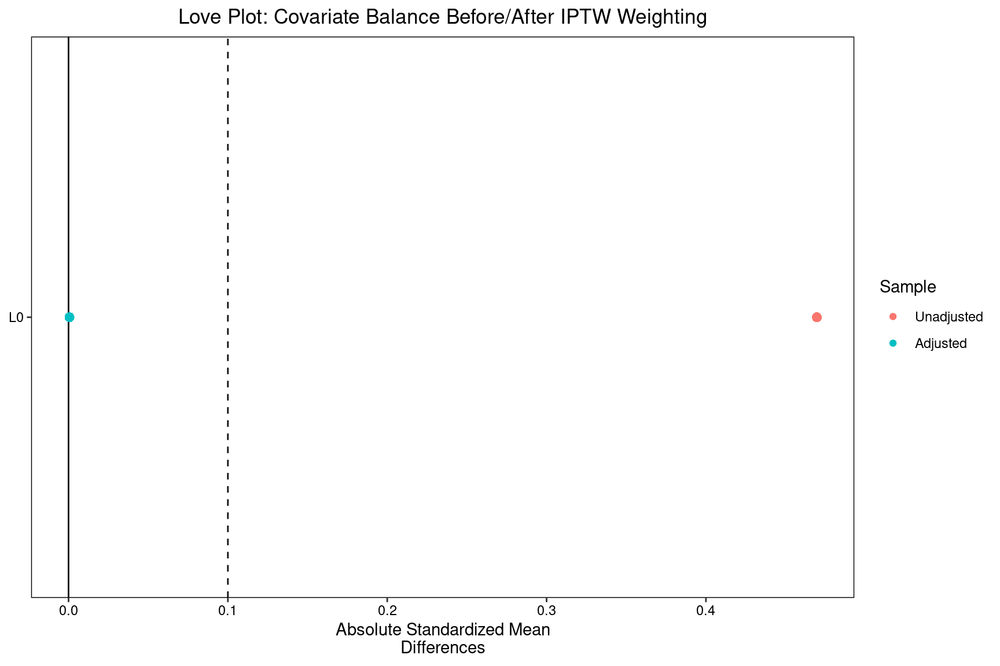
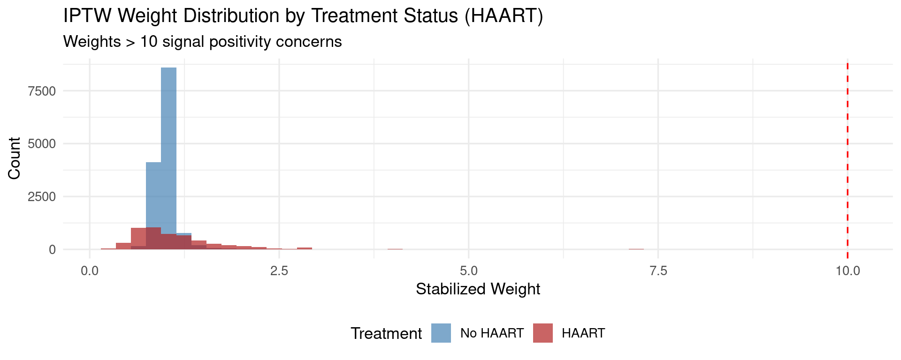

Code
packages <- c(
"tidyverse",
"ipw",
"WeightIt",
"geepack",
"ltmle",
"SuperLearner",
"survey",
"cobalt",
"ggplot2",
"patchwork"
)

The three preceding chapters addressed temporal causal inference in settings where time-varying confounders are either absent, ignored, or assumed not to be affected by prior treatment. Chapter 4.1 (VAR/Granger) made no causal claims beyond predictive precedence. Chapters 4.2 (ITS) and 4.3 (DiD/Panel) rely on versions of the parallel trends or trend continuity assumptions — conditions that are effectively violated the moment a time-varying covariate simultaneously responds to past treatment and predicts future outcomes. This chapter addresses that harder problem directly.
G-methods — the G-formula, marginal structural models (MSMs), and G-estimation of structural nested models (SNMs) — were developed by James Robins (1986, 1989, 1994) to handle the mediator-confounder dilemma: when \(L_t\) is both a confounder that must be adjusted and a mediator of prior treatment whose adjustment blocks part of the causal pathway. Standard regression cannot handle this; no enrichment of the covariate set resolves the structural impossibility. G-methods work with the marginal potential outcome distribution — explicitly marginalizing over the time-varying confounder distribution — rather than conditioning on it.
Longitudinal TMLE (Targeted Maximum Likelihood Estimation) is the state-of-the-art doubly robust semiparametric estimator for G-methods. It combines the G-computation estimand with a fluctuation step that achieves the semiparametric efficiency bound and provides valid inference even when nuisance models are estimated with machine learning.
Consider a longitudinal study with \(T\) time points. At each time \(t\):
The structural causal model includes: 1. \(L_t \leftarrow A_{t-1}, L_{t-1}\) — severity responds to past treatment 2. \(A_t \leftarrow L_t, \bar{A}_{t-1}\) — dose is adjusted based on current severity 3. \(Y_T \leftarrow \bar{A}, \bar{L}\) — outcome depends on full history
Why standard regression fails: Conditioning on \(L_t\) in a regression of \(Y\) on \(\bar{A}\):
The bias is structural, not a sample-size problem. G-methods avoid conditioning on \(L_t\) directly; instead they work in the space of marginal potential outcomes.
The G-formula (Robins 1986) identifies the counterfactual mean under a specified treatment regime \(\bar{a} = (a_0, a_1, \ldots, a_{T-1})\):
\[ \mathbb{E}[Y_T(\bar{a})] = \sum_{\bar{l}} Y_T \prod_{t=0}^{T-1} f(L_t \mid \bar{a}_{t-1}, \bar{l}_{t-1}) \cdot f(Y_T \mid \bar{a}, \bar{l}) \]
Estimation via Monte Carlo simulation (plug-in G-computation):
MSMs model the marginal potential outcome as a function of treatment history, without conditioning on time-varying confounders:
\[ \mathbb{E}[Y_T(\bar{a})] = m(\bar{a}; \boldsymbol{\psi}) \]
For a binary treatment, the simplest MSM is: \[ \text{logit}\,\mathbb{E}[Y_T(\bar{a})] = \psi_0 + \psi_1 \sum_{t=0}^{T-1} a_t \]
Estimation via Inverse Probability of Treatment Weighting (IPTW):
The stabilized weight for unit \(i\) is:
\[ SW_i = \prod_{t=0}^{T-1} \frac{P(A_t = a_{it} \mid \bar{A}_{i,t-1})}{P(A_t = a_{it} \mid \bar{A}_{i,t-1}, \bar{L}_{it})} \]
The numerator is the marginal probability (ignoring confounders); the denominator is the conditional probability (including confounders). The ratio creates a pseudo-population where \(L_t\) no longer predicts \(A_t\) — confounding is eliminated by reweighting.
Fitted MSM: Weighted regression of \(Y\) on treatment history summary, using weights \(SW_i\) and robust (sandwich) standard errors.
G-estimation targets blip effects — the effect of treatment at time \(t\) on the final outcome, holding future treatment at zero. The blip function:
\[ \gamma_t(H_t; \psi) = \mathbb{E}[Y_T(\bar{A}_{t-1}, A_t = 1, \bar{0}) - Y_T(\bar{A}_{t-1}, A_t = 0, \bar{0}) \mid H_t] \]
Identification: Under sequential ignorability, the blipped-down outcome \(Y_T^{\psi} = Y_T - \sum_{t} \gamma_t(H_t; \psi) A_t\) must be independent of \(A_t\) given \(H_t\). The estimating equation exploits this:
\[ \mathbb{E}\left[ A_t - \mathbb{E}[A_t \mid H_t] \right] \cdot \left[ Y_T - \sum_{k \geq t} \gamma_k(H_k; \psi) A_k \right] = 0 \]
TMLE combines:
Double robustness: TMLE is consistent if either the outcome model \(Q\) or the propensity score model \(g\) is correctly specified — not both simultaneously required.
Machine learning integration: Both \(Q\) and \(g\) can be estimated with SuperLearner (ensemble ML), allowing data-adaptive nuisance estimation without sacrificing valid statistical inference.
packages <- c(
"tidyverse",
"ipw",
"WeightIt",
"geepack",
"ltmle",
"SuperLearner",
"survey",
"cobalt",
"ggplot2",
"patchwork"
)#| warning: false
#| error: false
new_packages <- packages[!(packages %in% installed.packages()[,"Package"])]
if(length(new_packages)) install.packages(new_packages)invisible(lapply(packages, function(pkg) {
suppressPackageStartupMessages(library(pkg, character.only = TRUE))
}))cat("Successfully loaded packages:\n")Successfully loaded packages: [1] "package:patchwork" "package:cobalt" "package:survey"
[4] "package:survival" "package:Matrix" "package:grid"
[7] "package:SuperLearner" "package:gam" "package:foreach"
[10] "package:splines" "package:nnls" "package:ltmle"
[13] "package:geepack" "package:WeightIt" "package:ipw"
[16] "package:lubridate" "package:forcats" "package:stringr"
[19] "package:dplyr" "package:purrr" "package:readr"
[22] "package:tidyr" "package:tibble" "package:ggplot2"
[25] "package:tidyverse" "package:stats" "package:graphics"
[28] "package:grDevices" "package:utils" "package:datasets"
[31] "package:methods" "package:base" We simulate the classic longitudinal feedback structure: \(L_1\) responds to \(A_0\), then \(A_1\) is assigned based on \(L_1\), with the outcome \(Y\) depending on both treatments and \(L_1\).
n <- 5000
sim_long <- tibble(
id = 1:n,
# Baseline confounder
L0 = rnorm(n, mean = 0, sd = 1),
# Period 0 treatment (confounded by L0)
A0 = rbinom(n, 1, plogis(0.5 * L0)),
# Period 1 confounder: responds to A0 (the feedback!)
L1 = 0.5 * A0 - 0.4 * L0 + rnorm(n, sd = 0.7),
# Period 1 treatment (confounded by L1)
A1 = rbinom(n, 1, plogis(0.6 * L1 - 0.3 * A0)),
# Outcome: true effect of A0 = 1.0, A1 = 1.0, L1 = 0.8
Y = 1.0 * A0 + 1.0 * A1 + 0.8 * L1 + rnorm(n, sd = 1)
)
# True ATE (always-treat vs. never-treat)
# E[Y(1,1)] - E[Y(0,0)] ≈ 1.0 + 1.0 + 0.8*E[L1|A0=1] - 0.8*E[L1|A0=0]
# = 2.0 + 0.8 * 0.5 = 2.4 (approximately)
cat("Simulated longitudinal dataset:\n")Simulated longitudinal dataset: n = 5000 | Variables: L0, A0, L1, A1, Y True total ATE (always-treat vs never-treat) ≈ 2.4 Correlation(A0, A1): -0.046 (moderate — treatment switches) Correlation(L1, A0): 0.199 (confirms feedback structure)=== Naive OLS (BIASED — conditions on mediator-confounder L1) === A0 coefficient: 0.933 (true total effect contribution ≈ 1.4) A1 coefficient: 0.995 (true = 1.0)cat(" → A0 is underestimated because conditioning on L1 blocks A0 → L1 → Y path\n") → A0 is underestimated because conditioning on L1 blocks A0 → L1 → Y path=== G-Computation Component Models ===cat("\nL1 model (responds to A0):\n")
L1 model (responds to A0): Estimate Std. Error t value
(Intercept) 0.005734494 0.01423959 0.4027149
A0 0.502410466 0.02040748 24.6189417
L0 -0.393653200 0.01027904 -38.2966962
Pr(>|t|)
(Intercept) 0.68717522055830360105943555026897229254245758056640625000000000000000000000000000000000000000000000000000000000000000000000000000000000000000000000000000000000000000000000000000000000000000000000000000000000000000000000000000000000000000000000000000000000000000000000000000000000000000000
A0 0.00000000000000000000000000000000000000000000000000000000000000000000000000000000000000000000000000000000000000000000000000000205734245420927701790021461944926667358662767574796911736707534540740557436480080022419496825830003355794780257459326375894033190442148649478988322237186980524109
L0 0.00000000000000000000000000000000000000000000000000000000000000000000000000000000000000000000000000000000000000000000000000000000000000000000000000000000000000000000000000000000000000000000000000000000000000000000000000000000000000000000000000000000000000000000000000000000000000001327348cat("\nY model (includes L1 as confounder):\n")
Y model (includes L1 as confounder): Estimate Std. Error t value
(Intercept) 0.05467889 0.02542694 2.1504317
A0 0.93261145 0.03119497 29.8962105
A1 0.99520255 0.02935874 33.8979956
L0 0.01071380 0.01680971 0.6373581
L1 0.83443050 0.02077746 40.1603695
Pr(>|t|)
(Intercept) 0.031568930326500516114762717734265606850385665893554687500000000000000000000000000000000000000000000000000000000000000000000000000000000000000000000000000000000000000000000000000000000000000000000000000000000000000000000000000000000000000000000000000000000000000000000000000000000000000000000000000000000000000000
A0 0.000000000000000000000000000000000000000000000000000000000000000000000000000000000000000000000000000000000000000000000000000000000000000000000000000000000000000000000000000000000000822371664357725425812241500607337269077250629264827373556594369085579025785896620953859152892208526464007823443727264670882961101666
A1 0.000000000000000000000000000000000000000000000000000000000000000000000000000000000000000000000000000000000000000000000000000000000000000000000000000000000000000000000000000000000000000000000000000000000000000000000000000000000068984117217291266073063710422337886016919161326825048473785698334642610647906917601288
L0 0.523920822136508812505439891538117080926895141601562500000000000000000000000000000000000000000000000000000000000000000000000000000000000000000000000000000000000000000000000000000000000000000000000000000000000000000000000000000000000000000000000000000000000000000000000000000000000000000000000000000000000000000000
L1 0.000000000000000000000000000000000000000000000000000000000000000000000000000000000000000000000000000000000000000000000000000000000000000000000000000000000000000000000000000000000000000000000000000000000000000000000000000000000000000000000000000000000000000000000000000000000000000000000000000000000000000007077049n_sim <- 5000
gcomp_simulation <- function(a0_val, a1_val, data, mod_L1, mod_Y) {
# Simulate under fixed treatment regime (a0, a1)
df_sim <- data
df_sim$A0 <- a0_val
# Simulate L1 under A0 = a0_val
df_sim$L1 <- predict(mod_L1, newdata = df_sim) + rnorm(nrow(df_sim), sd = sigma(mod_L1))
df_sim$A1 <- a1_val
# Predict Y
mean(predict(mod_Y, newdata = df_sim))
}
EY_always_treat <- gcomp_simulation(1, 1, sim_long, mod_L1, mod_Y)
EY_never_treat <- gcomp_simulation(0, 0, sim_long, mod_L1, mod_Y)
cat("=== G-Computation Results ===\n")=== G-Computation Results === E[Y(1,1)] (always treat): 2.422 E[Y(0,0)] (never treat): 0.053 G-formula ATE: 2.369 True ATE ≈ 2.4# Bootstrap for confidence intervals
n_boot <- 200
boot_ate <- replicate(n_boot, {
idx <- sample(n, n, replace = TRUE)
boot_df <- sim_long[idx, ]
bL1 <- lm(L1 ~ A0 + L0, data = boot_df)
bY <- lm(Y ~ A0 + A1 + L0 + L1, data = boot_df)
e1 <- gcomp_simulation(1, 1, boot_df, bL1, bY)
e0 <- gcomp_simulation(0, 0, boot_df, bL1, bY)
e1 - e0
})
cat("=== G-Computation Bootstrap CIs ===\n")=== G-Computation Bootstrap CIs === ATE: 2.342 95% CI: [2.239, 2.433]# Denominator: P(A0 | L0) and P(A1 | A0, L0, L1)
ps_A0_denom <- glm(A0 ~ L0, data = sim_long, family = binomial)
ps_A1_denom <- glm(A1 ~ A0 + L0 + L1, data = sim_long, family = binomial)
# Numerator (stabilized): P(A0) and P(A1 | A0) — marginal
ps_A0_numer <- glm(A0 ~ 1, data = sim_long, family = binomial)
ps_A1_numer <- glm(A1 ~ A0, data = sim_long, family = binomial)
# Compute stabilized weights
sim_long <- sim_long %>%
mutate(
# Probabilities
pA0_denom = predict(ps_A0_denom, type = "response"),
pA1_denom = predict(ps_A1_denom, type = "response"),
pA0_numer = predict(ps_A0_numer, type = "response"),
pA1_numer = predict(ps_A1_numer, type = "response"),
# Probabilities of observed treatment
prob_A0_denom = ifelse(A0 == 1, pA0_denom, 1 - pA0_denom),
prob_A1_denom = ifelse(A1 == 1, pA1_denom, 1 - pA1_denom),
prob_A0_numer = ifelse(A0 == 1, pA0_numer, 1 - pA0_numer),
prob_A1_numer = ifelse(A1 == 1, pA1_numer, 1 - pA1_numer),
# Stabilized weights (product over time)
SW = (prob_A0_numer / prob_A0_denom) * (prob_A1_numer / prob_A1_denom)
)
cat("=== Stabilized IPTW Weight Summary ===\n")=== Stabilized IPTW Weight Summary === Mean: 1.000 (should be ≈ 1.0) SD: 0.358 Max: 4.600 % > 10: 0.0%cat("\n")# Distribution of stabilized weights
ggplot(sim_long, aes(x = SW)) +
geom_histogram(bins = 60, fill = "steelblue", alpha = 0.75, color = "white") +
geom_vline(xintercept = 10, linetype = "dashed", color = "red") +
labs(
title = "IPTW Stabilized Weight Distribution",
subtitle = "Values > 10 indicate positivity concerns",
x = "Stabilized Weight (SW)", y = "Count"
) +
theme_minimal(base_size = 13)
# Create treatment history summary: number of periods treated (0, 1, or 2)
sim_long <- sim_long %>%
mutate(total_treat = A0 + A1)
# Fit MSM using weighted GEE
msm_fit <- svyglm(
Y ~ total_treat,
design = svydesign(ids = ~1, weights = ~SW, data = sim_long),
family = gaussian()
)
cat("=== MSM with Stabilized IPTW Weights ===\n")=== MSM with Stabilized IPTW Weights ===
Call:
svyglm(formula = Y ~ total_treat, design = svydesign(ids = ~1,
weights = ~SW, data = sim_long), family = gaussian())
Survey design:
svydesign(ids = ~1, weights = ~SW, data = sim_long)
Coefficients:
Estimate Std. Error t value Pr(>|t|)
(Intercept) 0.06354 0.03293 1.93 0.0537 .
total_treat 1.17179 0.02666 43.96 <0.0000000000000002 ***
---
Signif. codes: 0 '***' 0.001 '**' 0.01 '*' 0.05 '.' 0.1 ' ' 1
(Dispersion parameter for gaussian family taken to be 1.491409)
Number of Fisher Scoring iterations: 2
MSM ATE (always-treat vs. never-treat = 2×β): 2.344True ATE ≈ 2.4# Trim at 95th percentile and re-estimate
trim_threshold <- quantile(sim_long$SW, 0.95)
sim_long <- sim_long %>%
mutate(SW_trimmed = pmin(SW, trim_threshold))
msm_trimmed <- svyglm(
Y ~ total_treat,
design = svydesign(ids = ~1, weights = ~SW_trimmed, data = sim_long),
family = gaussian()
)
ate_trimmed <- 2 * coef(msm_trimmed)["total_treat"]
cat("=== Weight Trimming Sensitivity ===\n")=== Weight Trimming Sensitivity === Untrimmed ATE: 2.344 Trimmed (95th): 2.356 (max weight: 1.66) Difference: 0.013 (small difference → robust to trimming)ltmle requires data in wide format: one row per unit, columns ordered as \(L_0, A_0, L_1, A_1, Y\).
# Wide format for ltmle
ltmle_data <- sim_long %>%
select(L0, A0, L1, A1, Y) %>%
as.data.frame()
cat("ltmle wide format (first 5 rows):\n")ltmle wide format (first 5 rows): L0 A0 L1 A1 Y
1 0.52058907 0 -1.10038209 0 -0.3055511
2 -1.07969076 0 0.21076891 0 -0.5963414
3 0.13923812 0 0.36999072 0 -0.3645717
4 -0.08474878 0 -0.02174848 0 1.0288054
5 -0.66663962 1 0.78077928 1 3.0846443
Dimensions: 5000 × 5# Define treatment regimes
abar_always <- matrix(1, nrow = nrow(ltmle_data), ncol = 2) # always treat
abar_never <- matrix(0, nrow = nrow(ltmle_data), ncol = 2) # never treat
# Fit ltmle
tmle_result <- ltmle(
data = ltmle_data,
Anodes = c("A0", "A1"),
Lnodes = c("L0", "L1"),
Ynodes = "Y",
abar = list(abar_always, abar_never),
SL.library = c("SL.glm", "SL.mean"), # Simple SL; use richer library in practice
estimate.time = FALSE
)
cat("=== Longitudinal TMLE Results ===\n")=== Longitudinal TMLE Results ===summary(tmle_result)Estimator: tmle
Call:
ltmle(data = ltmle_data, Anodes = c("A0", "A1"), Lnodes = c("L0",
"L1"), Ynodes = "Y", abar = list(abar_always, abar_never),
SL.library = c("SL.glm", "SL.mean"), estimate.time = FALSE)
Treatment Estimate:
Parameter Estimate: 2.4065
Estimated Std Err: 0.033121
p-value: <2e-16
95% Conf Interval: (2.3416, 2.4714)
Control Estimate:
Parameter Estimate: 0.069375
Estimated Std Err: 0.032997
p-value: <2e-16
95% Conf Interval: (0.004702, 0.13405)
Additive Treatment Effect:
Parameter Estimate: 2.3371
Estimated Std Err: 0.046273
p-value: <2e-16
95% Conf Interval: (2.2464, 2.4278) tmle_summary <- summary(tmle_result)
# ATE from treatment contrast
tmle_ate <- tmle_summary$effect.measures$ATE$estimate
tmle_ci_lo <- tmle_summary$effect.measures$ATE$CI[1]
tmle_ci_hi <- tmle_summary$effect.measures$ATE$CI[2]
tmle_pvalue <- tmle_summary$effect.measures$ATE$pvalue
cat("=== TMLE ATE Summary ===\n")=== TMLE ATE Summary === ATE (always-treat vs. never-treat): 2.337 95% CI: [2.246, 2.428] P-value: 0.0000 → Statistically significant True ATE ≈ 2.4results_table <- tibble(
Estimator = c("Naive OLS", "G-Computation", "MSM / IPTW",
"MSM (trimmed)", "Longitudinal TMLE"),
Estimate = c(
coef(naive_lm)["A0"] + coef(naive_lm)["A1"], # sum (approximate)
EY_always_treat - EY_never_treat,
msm_ate,
ate_trimmed,
tmle_ate
),
Note = c(
"Biased — conditions on mediator-confounder",
"Correct — marginalizes over L1",
"Correct — IPTW reweighting",
"Trimmed weights — sensitivity check",
"Doubly robust — preferred"
)
)
cat("=== Estimator Comparison Table ===\n")=== Estimator Comparison Table ===print(results_table, n = Inf)# A tibble: 5 × 3
Estimator Estimate Note
<chr> <dbl> <chr>
1 Naive OLS 1.93 Biased — conditions on mediator-confounder
2 G-Computation 2.37 Correct — marginalizes over L1
3 MSM / IPTW 2.34 Correct — IPTW reweighting
4 MSM (trimmed) 2.36 Trimmed weights — sensitivity check
5 Longitudinal TMLE 2.34 Doubly robust — preferred
True ATE ≈ 2.4=== Covariate Balance: L0 by A0 (Before and After IPTW) ===print(balance_result)Balance Measures
Type M.0.Un SD.0.Un M.1.Un SD.1.Un Diff.Un M.0.Adj SD.0.Adj M.1.Adj
L0 Contin. -0.2346 0.9712 0.2194 0.9619 0.4696 -0.0068 1.0056 -0.0073
SD.1.Adj Diff.Adj
L0 0.984 -0.0006
Effective sample sizes
Control Treated
Unadjusted 2505. 2495.
Adjusted 2221.74 2209.1# Love plot
love.plot(
A0 ~ L0,
data = sim_long,
weights = sim_long$SW,
abs = TRUE,
thresholds = c(m = 0.1),
title = "Love Plot: Covariate Balance Before/After IPTW Weighting"
)
The E-value quantifies how strong unmeasured confounding would need to be to explain away a causal effect. For a risk ratio \(RR\):
\[ \text{E-value} = RR + \sqrt{RR(RR - 1)} \]
# Compute E-value for the TMLE estimate
# Convert to risk ratio scale for interpretation (approximate)
# Using absolute effect on continuous Y: standardize by outcome SD
outcome_sd <- sd(sim_long$Y)
std_ate <- tmle_ate / outcome_sd
# E-value approximation for standardized mean difference
evalue_est <- std_ate + sqrt(std_ate * (std_ate - 1 + 1)) # simplified formula
# More precise: use EValue package for binary outcomes
# For continuous, use evalues.MD()
cat("=== Sequential Ignorability Sensitivity ===\n")=== Sequential Ignorability Sensitivity === TMLE ATE: 2.337 Standardized ATE (d): 1.579 SDs E-value interpretation: Unmeasured confounding would need association ≥ 4.21-fold with both A and Y to reduce effect to zero.We use the ipw package’s built-in haartdat dataset — HIV+ patients with time-varying antiretroviral treatment and CD4 count (a time-varying confounder affected by treatment).
=== HIV Treatment Dataset (haartdat) === Patients: 1200 | Observations: 19175cat("\nVariables:\n")
Variables:cat(" patient: patient ID\n") patient: patient IDcat(" tstart/fuptime: time intervals (counting process)\n") tstart/fuptime: time intervals (counting process)cat(" haartind: HAART treatment indicator (time-varying)\n") haartind: HAART treatment indicator (time-varying)cat(" event: death indicator\n") event: death indicatorcat(" cd4.sqrt: sqrt(CD4 count) — time-varying confounder\n") cd4.sqrt: sqrt(CD4 count) — time-varying confoundercat(" age, sex: baseline covariates\n\n") age, sex: baseline covariates patient tstart fuptime haartind event sex age cd4.sqrt endtime dropout
1 1 -100 0 0 0 1 22 23.83275 2900 0
2 1 0 100 0 0 1 22 25.59297 2900 0
3 1 100 200 0 0 1 22 23.47339 2900 0
4 1 200 300 0 0 1 22 24.16609 2900 0
5 1 300 400 0 0 1 22 23.23790 2900 0
6 1 400 500 0 0 1 22 24.85961 2900 0
7 1 500 600 0 0 1 22 25.94224 2900 0
8 1 600 700 1 0 1 22 26.03843 2900 0# Estimate time-varying IPTW weights using ipw::ipwtm
# family = "survival" uses a Cox model; cd4.sqrt is the actual column name
temp_weights <- ipwtm(
exposure = haartind,
family = "survival",
numerator = ~ age + sex, # Marginal (numerator)
denominator = ~ age + sex + cd4.sqrt, # Conditional (denominator)
id = patient,
tstart = tstart,
timevar = fuptime,
type = "first",
data = haartdat
)
haartdat$sw <- temp_weights$ipw.weights
cat("=== HAART IPTW Weight Summary ===\n")=== HAART IPTW Weight Summary === Mean: 1.039 SD: 0.393 Range: 0.246 – 7.126library(survival)
# Unweighted Cox model (naive, biased)
cox_naive <- coxph(Surv(tstart, fuptime, event) ~ haartind,
data = haartdat, id = patient)
# Weighted Cox model (MSM)
cox_msm <- coxph(Surv(tstart, fuptime, event) ~ haartind,
data = haartdat,
id = patient,
weights = haartdat$sw,
robust = TRUE)
cat("=== MSM Cox Model: Effect of HAART on Survival ===\n")=== MSM Cox Model: Effect of HAART on Survival ===cat("\nNaive Cox (biased — confounded by CD4 count):\n")
Naive Cox (biased — confounded by CD4 count): HR = 0.556 (95% CI: 0.236, 1.310)cat("\nMSM Cox (IPTW weighted — removes time-varying confounding):\n")
MSM Cox (IPTW weighted — removes time-varying confounding): HR = 0.371 (95% CI: 0.150, 0.916)cat("\nInterpretation: MSM estimate removes the healthy-user bias.\n")
Interpretation: MSM estimate removes the healthy-user bias.cat("HAART is initiated when CD4 declines — naive analysis confounds\n")HAART is initiated when CD4 declines — naive analysis confoundscat("treatment effect with the selection into treatment.\n")treatment effect with the selection into treatment.ggplot(haartdat, aes(x = sw, fill = factor(haartind))) +
geom_histogram(bins = 50, alpha = 0.7, position = "identity") +
geom_vline(xintercept = 10, linetype = "dashed", color = "red") +
scale_fill_manual(values = c("0" = "steelblue", "1" = "firebrick"),
labels = c("No HAART", "HAART")) +
labs(
title = "IPTW Weight Distribution by Treatment Status (HAART)",
subtitle = "Weights > 10 signal positivity concerns",
x = "Stabilized Weight", y = "Count", fill = "Treatment"
) +
theme_minimal(base_size = 13) +
theme(legend.position = "bottom")
Longitudinal G-methods and TMLE represent the frontier of causal inference for settings with time-varying confounding. Key takeaways:
On why G-methods are necessary. When a time-varying covariate is both a confounder and a mediator of prior treatment, no standard regression or stratification procedure produces an unbiased causal estimate. This is not a covariate insufficiency problem — it is a structural impossibility. G-methods resolve it by targeting the marginal potential outcome distribution rather than the conditional distribution.
On the G-formula. Parametric G-computation is fully flexible for comparing arbitrary treatment regimes and dynamic rules. Its key weakness is parametric sensitivity: if the component models for \(L_t\) or \(Y\) are misspecified, the G-formula estimate is biased. Monte Carlo simulation accumulates bias over time steps, making long follow-up periods particularly sensitive.
On MSMs with IPTW. IPTW creates a pseudo-population that is free of measured time-varying confounding. Stabilized weights (numerator ≠ 1) reduce variance. Extreme weights signal positivity violations — check, trim at a percentile, and report sensitivity. The MSM itself is a simple weighted regression, making results easy to interpret and present.
On longitudinal TMLE. TMLE is the recommended estimator when outcome models are uncertain or when machine learning is used for nuisance estimation. Its doubly robust property — consistency if either the outcome model or the propensity model is correctly specified — provides insurance against model misspecification. The targeting step ensures valid inference even with data-adaptive nuisance estimation.
On diagnostics. Every G-method analysis should report: (a) weight distributions with positivity diagnostics; (b) covariate balance before and after weighting (Love plots); (c) sensitivity to weight trimming; (d) E-values for unmeasured sequential confounding; and (e) the temporal DAG justifying the sequential ignorability assumption.
| Resource | Description |
|---|---|
| Robins (1986) | Mathematical Modelling — original G-formula paper |
| Robins, Hernán & Brumback (2000) | Epidemiology — foundational MSM / IPTW paper |
| Hernán & Robins (2020) | Causal Inference: What If — Chapters 19–23, free online |
ltmle package |
Schwab et al. — vignette with worked examples |
gfoRmula package |
McGrath et al. — parametric G-formula in R |
ipw package |
Wijnen et al. — time-varying IPTW |
cobalt package |
Love plots and balance diagnostics |
| Petersen et al. (2012) | Am. J. Epidemiology — positivity violations guide |
| van der Laan & Rose (2011) | Targeted Learning — TMLE textbook |